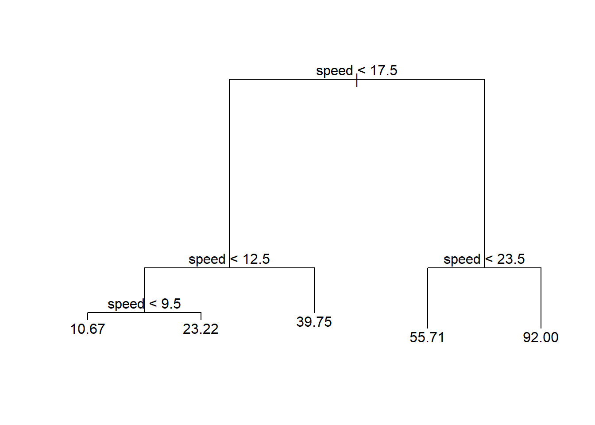
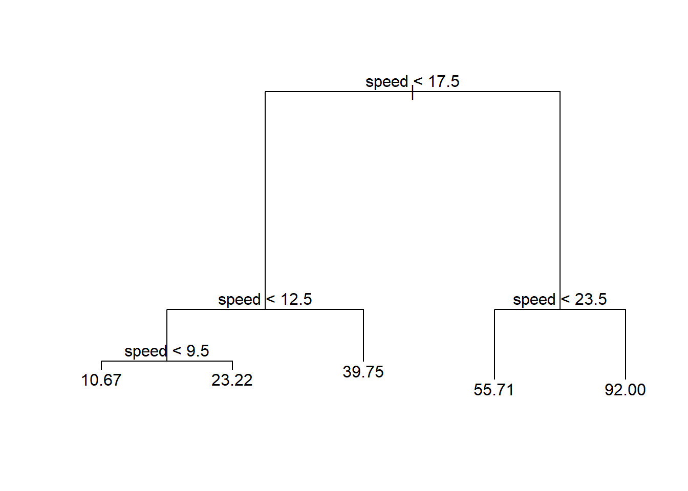
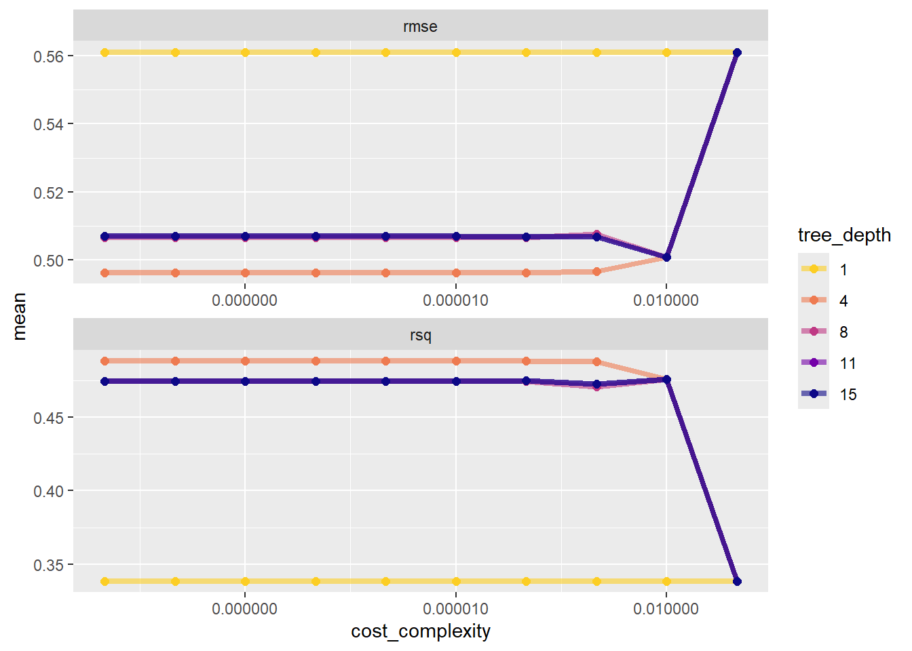
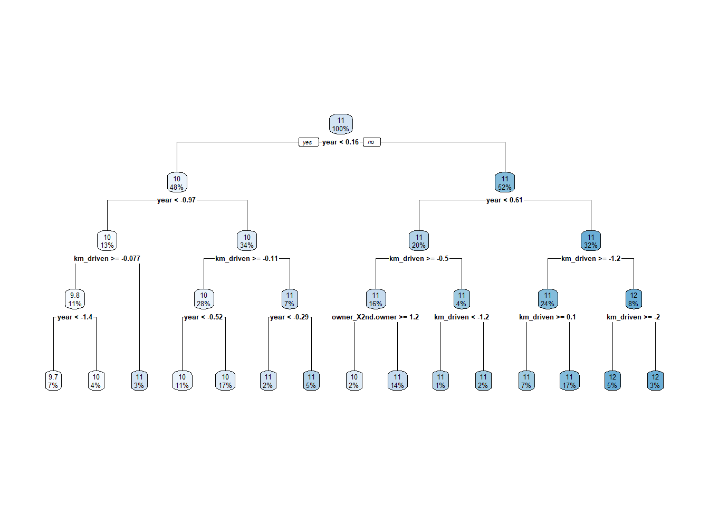

library(tree) #rpart is also often usedWarning: package 'tree' was built under R version 4.5.2fitTree <- tree(dist ~ speed, data = cars) #default splitting is deviance
plot(fitTree)
text(fitTree)
Tree based methods are very flexible. They attempt to split up predictor space into regions. On each region, a different prediction can then be made. Adjacent regions need not have predictions close to each other!
Recall that we have two separate tasks we could do in a supervised learning situation, regression or classification. Depending on the situation, we can create a regression or classification tree!
Classification tree if the goal is to classify (predict) group membership
Regression tree if the goal is to predict a continuous response
These models are very easy for people to interpret! For instance, consider the tree below relating a predictor (speed) to stopping distance (dist).
library(tree) #rpart is also often usedWarning: package 'tree' was built under R version 4.5.2fitTree <- tree(dist ~ speed, data = cars) #default splitting is deviance
plot(fitTree)
text(fitTree)
We can compare this to the simple linear regression fit to see the increased flexibility of a regression tree model.
library(tidyverse)Warning: package 'tidyverse' was built under R version 4.5.1Warning: package 'ggplot2' was built under R version 4.5.2Warning: package 'tibble' was built under R version 4.5.1Warning: package 'tidyr' was built under R version 4.5.1Warning: package 'readr' was built under R version 4.5.1Warning: package 'purrr' was built under R version 4.5.1Warning: package 'dplyr' was built under R version 4.5.1Warning: package 'stringr' was built under R version 4.5.1Warning: package 'forcats' was built under R version 4.5.1Warning: package 'lubridate' was built under R version 4.5.1── Attaching core tidyverse packages ──────────────────────── tidyverse 2.0.0 ──
✔ dplyr 1.1.4 ✔ readr 2.1.5
✔ forcats 1.0.0 ✔ stringr 1.5.1
✔ ggplot2 4.0.0 ✔ tibble 3.3.0
✔ lubridate 1.9.4 ✔ tidyr 1.3.1
✔ purrr 1.1.0
── Conflicts ────────────────────────────────────────── tidyverse_conflicts() ──
✖ dplyr::filter() masks stats::filter()
✖ dplyr::lag() masks stats::lag()
ℹ Use the conflicted package (<http://conflicted.r-lib.org/>) to force all conflicts to become errorsggplot(cars, aes(x = speed, y = dist)) +
geom_point() +
geom_smooth(method = "lm", se = FALSE, size = 2) +
geom_segment(x = 0, xend = 9.5, y = 10.67, yend = 10.67, col = "Orange", size = 2) +
geom_segment(x = 9.5, xend = 12.5, y = 23.22, yend = 23.22, col = "Orange", size = 2) +
geom_segment(x = 12.5, xend = 17.5, y = 39.75, yend = 39.75, col = "Orange", size = 2) +
geom_segment(x = 17.5, xend = 23.5, y = 55.71, yend = 55.71, col = "Orange", size = 2) +
geom_segment(x = 23.5, xend = max(cars$speed), y = 92, yend = 92, col = "Orange", size = 2)Warning: Using `size` aesthetic for lines was deprecated in ggplot2 3.4.0.
ℹ Please use `linewidth` instead.`geom_smooth()` using formula = 'y ~ x'
Recall: Once we’ve chosen our model form, we need to fit the model to data. Generally, we can write the fitting process as the minimization of some loss function over the training data. How do we pick our splits of the predictor space in this case?
Fit using recursive binary splitting - a greedy algorithm
For every possible value of each predictor, we find the squared error loss based on splitting our data around that point. We then try to minimize that
Consider having one variable x. For a given observed value, call it s, we can think of having two regions (recall | is read as ‘given’):R1(s)={x|x<s}andR2(s)={x|x≥s}
We seek the value of s that minimize the equation∑allxinR1(s)(yi−y‾R1)2+∑allxinR2(s)(yi−y‾R2)2
Written more mathematically, we could say we want minimizemins∑i:xi∈R1(s)(yi−y‾R1)2+∑i:xi∈R2(s)(yi−y‾R2)2
Let’s visualize this idea! Consider that basic cars data set that has a response of dist (stopping distance) and a predictor of speed. Let’s find the value of the loss functions for different splits of our speed variable.
ggplot(cars, aes(x = speed, y = dist)) +
geom_point()
let’s first try a split at speed = 7. The sum of squared errors based on this split is 2.766546^{4}.
Again, this is found by taking all the points in the first region, finding the residual (from the mean, represented by the blue line here), squaring those, and summing the values. Then we repeat for the 2nd region. The sum of those two values is then the sum of squared errors (SSE) if we were to use this split.
Is that the smallest it could be? Likely not! Let’s try some other splits and see what SSE they give.
We would try this for all possible splits (across each predictor) and choose the split that minimizes the sum of squared errors as our first split. It turns out that speed = 17.5 is the optimal splitting point for this data set.
Next, we’d go down the first branch of that split to that ‘node’. This node has all the observations corresponding to that branch. Now we repeat this process there!
Here the best split on the lower portion is 12.5.
Likewise, we go down the second branch to the other node and repeat the process.
Generally, we grow a `large’ tree (many nodes)
Trees can then be pruned back so as to not overfit the data (pruned back using some criterion like cost-complexity pruning)
Generally, we can choose number of nodes/splits using the training/test set or cross-validation!
tidymodelsRecall the Bike data and log_selling_price as our response. We’ll do a training test split and select our regression tree model on the training set using CV. This will allow us to compare the ‘best’ regression tree model to our best MLR and LASSO models from earlier!
For this setup, our process for fitting a model with tidymodels is
Split the data into the train and test splits (we’ll use the same seed as previous so we get the same train and test splits!)
Create CV folds from the training set
Create our recipe - that is, determine the predictors in our model
Define our model engine - that is, decide the type of model and how it will be fit
Create a workflow
Fit the workflow to our CV folds.
Collect the metrics and determine the best model on the training data (here best tuning parameter set)
Finalize our workflow and fit our model to the entire training data set
Compare models on the test set.
Fit the overall best model to the entire data set.
set.seed(10)
library(tidyverse)
library(tidymodels)Warning: package 'tidymodels' was built under R version 4.5.2── Attaching packages ────────────────────────────────────── tidymodels 1.4.1 ──✔ broom 1.0.9 ✔ rsample 1.3.1
✔ dials 1.4.2 ✔ tailor 0.1.0
✔ infer 1.0.9 ✔ tune 2.0.1
✔ modeldata 1.5.1 ✔ workflows 1.3.0
✔ parsnip 1.3.3 ✔ workflowsets 1.1.1
✔ recipes 1.3.1 ✔ yardstick 1.3.2Warning: package 'broom' was built under R version 4.5.1Warning: package 'dials' was built under R version 4.5.2Warning: package 'scales' was built under R version 4.5.1Warning: package 'infer' was built under R version 4.5.2Warning: package 'modeldata' was built under R version 4.5.2Warning: package 'parsnip' was built under R version 4.5.2Warning: package 'recipes' was built under R version 4.5.2Warning: package 'rsample' was built under R version 4.5.2Warning: package 'tailor' was built under R version 4.5.2Warning: package 'tune' was built under R version 4.5.2Warning: package 'workflows' was built under R version 4.5.2Warning: package 'workflowsets' was built under R version 4.5.2Warning: package 'yardstick' was built under R version 4.5.2── Conflicts ───────────────────────────────────────── tidymodels_conflicts() ──
✖ scales::discard() masks purrr::discard()
✖ dplyr::filter() masks stats::filter()
✖ recipes::fixed() masks stringr::fixed()
✖ dplyr::lag() masks stats::lag()
✖ yardstick::spec() masks readr::spec()
✖ recipes::step() masks stats::step()bike_data <- read_csv("https://www4.stat.ncsu.edu/~online/datasets/bikeDetails.csv") |>
mutate(log_selling_price = log(selling_price),
log_km_driven = log(km_driven),
owners = ifelse(owner == "1st owner", "single", "multiple")) |>
select(-selling_price)Rows: 1061 Columns: 7── Column specification ────────────────────────────────────────────────────────
Delimiter: ","
chr (3): name, seller_type, owner
dbl (4): selling_price, year, km_driven, ex_showroom_price
ℹ Use `spec()` to retrieve the full column specification for this data.
ℹ Specify the column types or set `show_col_types = FALSE` to quiet this message.#save creation of new variables for now!
bike_split <- initial_split(bike_data, prop = 0.7)
bike_train <- training(bike_split)
bike_test <- testing(bike_split)
bike_train# A tibble: 742 × 9
name year seller_type owner km_driven ex_showroom_price log_selling_price
<chr> <dbl> <chr> <chr> <dbl> <dbl> <dbl>
1 Bajaj … 2012 Individual 1st … 50000 54299 10.3
2 Honda … 2015 Individual 1st … 7672 54605 10.6
3 Bajaj … 2005 Individual 1st … 21885 NA 9.80
4 Hero H… 2017 Individual 1st … 27000 NA 10.5
5 Royal … 2013 Individual 1st … 49000 NA 11.4
6 Bajaj … 2008 Individual 1st … 19500 NA 10.3
7 Hero C… 2014 Individual 1st … 38000 NA 10.5
8 Bajaj … 2009 Individual 1st … 16000 NA 9.90
9 Hero H… 2008 Individual 3rd … 65000 NA 10.1
10 Bajaj … 2019 Individual 1st … 7600 NA 12.2
# ℹ 732 more rows
# ℹ 2 more variables: log_km_driven <dbl>, owners <chr>bike_CV_folds <- vfold_cv(bike_train, 10)tree_rec <- recipe(log_selling_price ~ ., data = bike_train) |>
update_role(name, new_role = "ID") |>
step_log(km_driven) |>
step_rm(ex_showroom_price) |>
step_dummy(owner, seller_type) |>
step_normalize(all_numeric(), -all_outcomes())
tree_rec── Recipe ──────────────────────────────────────────────────────────────────────── Inputs Number of variables by roleoutcome: 1
predictor: 7
ID: 1── Operations • Log transformation on: km_driven• Variables removed: ex_showroom_price• Dummy variables from: owner seller_type• Centering and scaling for: all_numeric() -all_outcomes()Note: We don’t need to include interaction terms in our tree based models! An interaction would imply that the effect of, say, log_km_driven depends on the year the bike was manufactured (and vice-versa). The tree structure inherently includes this type of relationship! For instance, suppose we first split on log_km_driven > 10. On the branch where log_km_driven > 10 we then split on year < 1990. Suppose those are our only two splits. We can see that the effect of year is different depending on our log_km_driven! For one side of the log_km_driven split we don’t include year at all (hence it doesn’t have an effect when considering those values of log_km_driven) and on the other side of that split we change our prediction based on year. This is exactly the idea of an interaction!
In this case, decision_tree() with rpart as the engine will do the trick. If we click on the link for this model we can see that there are three tuning parameters we can consider:
tree_depth: Tree Depth (type: integer, default: 30L) min_n: Minimal Node Size (type: integer, default: 2L) cost_complexity: Cost-Complexity Parameter (type: double, default: 0.01) If we want to use CV to choose one of these, we can set its value to tune() when creating the model. Let’s use tree_depth and cost_complexity as our tuning parameters and set our min_n to 20.
In the case of decision_tree() we also need to tell tidymodels whether we are doing a regression task vs a classification task. This is done via set_mode().
tree_mod <- decision_tree(tree_depth = tune(),
min_n = 20,
cost_complexity = tune()) |>
set_engine("rpart") |>
set_mode("regression")Now we use workflow() to create an object to use in our fitting processes.
tree_wkf <- workflow() |>
add_recipe(tree_rec) |>
add_model(tree_mod)Now we can use tune_grid() on our bike_CV_folds object. We just need to create a tuning grid to fit our models with. If we don’t specify one, the dials package tries to figure it out for us:
temp <- tree_wkf |>
tune_grid(resamples = bike_CV_folds) #uses defaults from dials
temp |>
collect_metrics()# A tibble: 20 × 8
cost_complexity tree_depth .metric .estimator mean n std_err .config
<dbl> <int> <chr> <chr> <dbl> <int> <dbl> <chr>
1 0.0000000001 5 rmse standard 0.502 10 0.0154 pre0_mod01…
2 0.0000000001 5 rsq standard 0.478 10 0.0184 pre0_mod01…
3 0.000000001 11 rmse standard 0.507 10 0.0169 pre0_mod02…
4 0.000000001 11 rsq standard 0.474 10 0.0221 pre0_mod02…
5 0.00000001 1 rmse standard 0.561 10 0.0190 pre0_mod03…
6 0.00000001 1 rsq standard 0.338 10 0.0176 pre0_mod03…
7 0.0000001 7 rmse standard 0.506 10 0.0159 pre0_mod04…
8 0.0000001 7 rsq standard 0.477 10 0.0207 pre0_mod04…
9 0.000001 13 rmse standard 0.507 10 0.0169 pre0_mod05…
10 0.000001 13 rsq standard 0.474 10 0.0221 pre0_mod05…
11 0.00001 2 rmse standard 0.538 10 0.0196 pre0_mod06…
12 0.00001 2 rsq standard 0.396 10 0.0209 pre0_mod06…
13 0.0001 8 rmse standard 0.507 10 0.0167 pre0_mod07…
14 0.0001 8 rsq standard 0.474 10 0.0220 pre0_mod07…
15 0.001 15 rmse standard 0.507 10 0.0175 pre0_mod08…
16 0.001 15 rsq standard 0.473 10 0.0231 pre0_mod08…
17 0.01 4 rmse standard 0.501 10 0.0180 pre0_mod09…
18 0.01 4 rsq standard 0.476 10 0.0220 pre0_mod09…
19 0.1 10 rmse standard 0.561 10 0.0190 pre0_mod10…
20 0.1 10 rsq standard 0.338 10 0.0176 pre0_mod10…We can see that the cost_complexity parameter and tree_depth parameters are randomly varied and results are returned.
If we want to set the number of the values ourselves, we can use grid_regular() instead. By specifying a vector or levels we can say how many of each tuning parameter we want. grid_regular() then finds all combinations of the values of each (here 10*5 = 50 combinations).
tree_grid <- grid_regular(cost_complexity(),
tree_depth(),
levels = c(10, 5))Now we use tune_grid() with this grid specified.
tree_fits <- tree_wkf |>
tune_grid(resamples = bike_CV_folds,
grid = tree_grid)
tree_fits# Tuning results
# 10-fold cross-validation
# A tibble: 10 × 4
splits id .metrics .notes
<list> <chr> <list> <list>
1 <split [667/75]> Fold01 <tibble [100 × 6]> <tibble [0 × 4]>
2 <split [667/75]> Fold02 <tibble [100 × 6]> <tibble [0 × 4]>
3 <split [668/74]> Fold03 <tibble [100 × 6]> <tibble [0 × 4]>
4 <split [668/74]> Fold04 <tibble [100 × 6]> <tibble [0 × 4]>
5 <split [668/74]> Fold05 <tibble [100 × 6]> <tibble [0 × 4]>
6 <split [668/74]> Fold06 <tibble [100 × 6]> <tibble [0 × 4]>
7 <split [668/74]> Fold07 <tibble [100 × 6]> <tibble [0 × 4]>
8 <split [668/74]> Fold08 <tibble [100 × 6]> <tibble [0 × 4]>
9 <split [668/74]> Fold09 <tibble [100 × 6]> <tibble [0 × 4]>
10 <split [668/74]> Fold10 <tibble [100 × 6]> <tibble [0 × 4]>Looking at the tree_fits object isn’t super useful. It has all the info but we need to pull it out. As we see above, we can use collect_metrics() to combine the metrics across the folds.
tree_fits |>
collect_metrics()# A tibble: 100 × 8
cost_complexity tree_depth .metric .estimator mean n std_err .config
<dbl> <int> <chr> <chr> <dbl> <int> <dbl> <chr>
1 0.0000000001 1 rmse standard 0.561 10 0.0190 pre0_mod01…
2 0.0000000001 1 rsq standard 0.338 10 0.0176 pre0_mod01…
3 0.0000000001 4 rmse standard 0.496 10 0.0155 pre0_mod02…
4 0.0000000001 4 rsq standard 0.488 10 0.0189 pre0_mod02…
5 0.0000000001 8 rmse standard 0.507 10 0.0167 pre0_mod03…
6 0.0000000001 8 rsq standard 0.474 10 0.0220 pre0_mod03…
7 0.0000000001 11 rmse standard 0.507 10 0.0169 pre0_mod04…
8 0.0000000001 11 rsq standard 0.474 10 0.0221 pre0_mod04…
9 0.0000000001 15 rmse standard 0.507 10 0.0169 pre0_mod05…
10 0.0000000001 15 rsq standard 0.474 10 0.0221 pre0_mod05…
# ℹ 90 more rowsAs done in the tutorial, we can plot these to gain some insight:
tree_fits |>
collect_metrics() |>
mutate(tree_depth = factor(tree_depth)) |>
ggplot(aes(cost_complexity, mean, color = tree_depth)) +
geom_line(size = 1.5, alpha = 0.6) +
geom_point(size = 2) +
facet_wrap(~ .metric, scales = "free", nrow = 2) +
scale_x_log10(labels = scales::label_number()) +
scale_color_viridis_d(option = "plasma", begin = .9, end = 0)
Ideally, we probably want to sort this by the smallest rmse value. Let’s also filter down to just looking at rmse.
tree_fits |>
collect_metrics() |>
filter(.metric == "rmse") |>
arrange(mean)# A tibble: 50 × 8
cost_complexity tree_depth .metric .estimator mean n std_err .config
<dbl> <int> <chr> <chr> <dbl> <int> <dbl> <chr>
1 0.0000000001 4 rmse standard 0.496 10 0.0155 pre0_mod02…
2 0.000000001 4 rmse standard 0.496 10 0.0155 pre0_mod07…
3 0.00000001 4 rmse standard 0.496 10 0.0155 pre0_mod12…
4 0.0000001 4 rmse standard 0.496 10 0.0155 pre0_mod17…
5 0.000001 4 rmse standard 0.496 10 0.0155 pre0_mod22…
6 0.00001 4 rmse standard 0.496 10 0.0155 pre0_mod27…
7 0.0001 4 rmse standard 0.496 10 0.0155 pre0_mod32…
8 0.001 4 rmse standard 0.497 10 0.0154 pre0_mod37…
9 0.01 4 rmse standard 0.501 10 0.0180 pre0_mod42…
10 0.01 8 rmse standard 0.501 10 0.0180 pre0_mod43…
# ℹ 40 more rowsThe function select_best() can be used to grab the best model’s tuning parameter values. We also should specify which metric!
tree_best_params <- select_best(tree_fits, metric = "rmse")
tree_best_params# A tibble: 1 × 3
cost_complexity tree_depth .config
<dbl> <int> <chr>
1 0.0000000001 4 pre0_mod02_post0(After this initial phase, we might also want to fit a finer grid of tuning parameter values near the current ‘best’ ones!)
Now we can finalize our model on the training set by fitting this chosen model via finalize_workflow().
tree_final_wkf <- tree_wkf |>
finalize_workflow(tree_best_params)Now that we’ve set up how to fit the final model, let’s do it via last_fit() on the bike_split object.
tree_final_fit <- tree_final_wkf |>
last_fit(bike_split)
tree_final_fit# Resampling results
# Manual resampling
# A tibble: 1 × 6
splits id .metrics .notes .predictions .workflow
<list> <chr> <list> <list> <list> <list>
1 <split [742/319]> train/test split <tibble> <tibble> <tibble> <workflow>This object has information about how the final fitted model (fit on the entire training data set) performs on the test set. We can see the metrics more clearly using collect_metrics().
tree_final_fit |>
collect_metrics()# A tibble: 2 × 4
.metric .estimator .estimate .config
<chr> <chr> <dbl> <chr>
1 rmse standard 0.565 pre0_mod0_post0
2 rsq standard 0.445 pre0_mod0_post0As done in the tutorial, we could pull out this fit and learn more about it.
tree_final_model <- extract_workflow(tree_final_fit)
tree_final_model══ Workflow [trained] ══════════════════════════════════════════════════════════
Preprocessor: Recipe
Model: decision_tree()
── Preprocessor ────────────────────────────────────────────────────────────────
4 Recipe Steps
• step_log()
• step_rm()
• step_dummy()
• step_normalize()
── Model ───────────────────────────────────────────────────────────────────────
n= 742
node), split, n, deviance, yval
* denotes terminal node
1) root 742 352.956900 10.721500
2) year< 0.1604381 354 118.136200 10.304490
4) year< -0.9711688 99 42.945090 9.955315
8) km_driven>=-0.07668815 80 24.027690 9.812273
16) year< -1.423811 52 11.224130 9.659656 *
17) year>=-1.423811 28 9.343018 10.095710 *
9) km_driven< -0.07668815 19 10.388380 10.557600 *
5) year>=-0.9711688 255 58.435060 10.440050
10) km_driven>=-0.1109097 205 33.439120 10.355390
20) year< -0.518526 80 12.341380 10.225880 *
21) year>=-0.518526 125 18.897350 10.438270 *
11) km_driven< -0.1109097 50 17.502590 10.787150
22) year< -0.2922047 16 6.876996 10.503040 *
23) year>=-0.2922047 34 8.726354 10.920850 *
3) year>=0.1604381 388 117.094000 11.101970
6) year< 0.6130808 149 29.735310 10.800920
12) km_driven>=-0.5047722 121 20.838220 10.751970
24) owner_X2nd.owner>=1.178863 15 1.468796 10.451540 *
25) owner_X2nd.owner< 1.178863 106 17.823910 10.794490 *
13) km_driven< -0.5047722 28 7.354383 11.012450
26) km_driven< -1.218805 10 1.952084 10.880130 *
27) km_driven>=-1.218805 18 5.129964 11.085950 *
7) year>=0.6130808 239 65.435960 11.289650
14) km_driven>=-1.236697 179 35.914190 11.164620
28) km_driven>=0.1002281 52 8.612033 10.998670 *
29) km_driven< 0.1002281 127 25.283800 11.232560 *
15) km_driven< -1.236697 60 18.374510 11.662680
30) km_driven>=-2.026019 38 8.605414 11.552500 *
31) km_driven< -2.026019 22 8.511043 11.852980 *Plotting is definitely the better way to view this!
tree_final_model |>
extract_fit_engine() |>
rpart.plot::rpart.plot(roundint = FALSE)
Recall, we fit MLR models and LASSO models to this data set. We can pull those back up to determine which model did the best overall on the test set. Then we can get an overall ‘best’ model!
Here I’ll reproduce some code from before to get our previous best MLR and LASSO models fit to the training data.
MLR Model
#set up how we'll fit our linear model
MLR_spec <- linear_reg() |>
set_engine("lm")
#define the model
MLR_recipe3 <- recipe(log_selling_price ~ log_km_driven + owners + year,
data = bike_train) |>
step_dummy(owners) |>
step_interact(~log_km_driven:starts_with("owner") + log_km_driven:year + starts_with("owner"):year)
#workflow setup
MLR_wkf3 <- workflow() |>
add_recipe(MLR_recipe3) |>
add_model(MLR_spec)
#fit model on full training data
MLR_final <- MLR_wkf3 |>
last_fit(bike_split)LASSO Model
#set up how we'll fit our LASSO model
LASSO_spec <- linear_reg(penalty = tune(), mixture = 1) |>
set_engine("glmnet")
#define the model
LASSO_recipe <- recipe(log_selling_price ~ log_km_driven + owners + year,
data = bike_train) |>
step_dummy(owners) |>
step_normalize(log_km_driven, year)
#workflow setup
LASSO_wkf <- workflow() |>
add_recipe(LASSO_recipe) |>
add_model(LASSO_spec)
#find the best tuning parameter
LASSO_grid <- LASSO_wkf |>
tune_grid(resamples = bike_CV_folds,
grid = grid_regular(penalty(), levels = 200)) → A | warning: A correlation computation is required, but `estimate` is constant and has 0
standard deviation, resulting in a divide by 0 error. `NA` will be returned.There were issues with some computations A: x8There were issues with some computations A: x16There were issues with some computations A: x24There were issues with some computations A: x32There were issues with some computations A: x40There were issues with some computations A: x48There were issues with some computations A: x56There were issues with some computations A: x64There were issues with some computations A: x72There were issues with some computations A: x80
There were issues with some computations A: x80#finalize the workflow and find the best model on the training set
LASSO_final <- LASSO_wkf |>
finalize_workflow(LASSO_grid |>
select_best(metric = "rmse")) |>
last_fit(bike_split)Great - now we can compare our models on the test set!
rbind(
MLR_final |>
collect_metrics() |>
mutate(Model = "MLR", .before = ".metric"),
LASSO_final |>
collect_metrics() |>
mutate(Model = "LASSO", .before = ".metric"),
tree_final_fit |>
collect_metrics() |>
mutate(Model = "TREE", .before = ".metric")
)# A tibble: 6 × 5
Model .metric .estimator .estimate .config
<chr> <chr> <chr> <dbl> <chr>
1 MLR rmse standard 0.546 pre0_mod0_post0
2 MLR rsq standard 0.483 pre0_mod0_post0
3 LASSO rmse standard 0.557 pre0_mod0_post0
4 LASSO rsq standard 0.473 pre0_mod0_post0
5 TREE rmse standard 0.565 pre0_mod0_post0
6 TREE rsq standard 0.445 pre0_mod0_post0Now fit the MLR model to the entire data set. No tuning parameters here to worry about so this is pretty easy.
final_model <- MLR_wkf3 |>
fit(bike_data)
tidy(final_model)# A tibble: 7 × 5
term estimate std.error statistic p.value
<chr> <dbl> <dbl> <dbl> <dbl>
1 (Intercept) -127. 79.6 -1.60 0.110
2 log_km_driven 6.56 7.82 0.839 0.402
3 year 0.0709 0.0396 1.79 0.0738
4 owners_single -126. 20.8 -6.07 0.00000000179
5 log_km_driven_x_owners_single 0.281 0.0616 4.57 0.00000555
6 log_km_driven_x_year -0.00348 0.00389 -0.895 0.371
7 owners_single_x_year 0.0613 0.0103 5.97 0.00000000333Classification trees are very similar to regression trees except, of course, our response is a categorical variable. This means that we don’t use the same loss functions nor metrics, but we still
split the predictor space up into regions
make our prediction based on which bin an observation ends up in
most often, we use the most prevalent class in a bin as our prediction
Pros:
Simple to understand and easy to interpret output
Predictors don’t need to be scaled. Unlike algorithms like the LASSO, having all the predictors on different scales makes no difference in the choosing of regions.
No statistical assumptions necessary to get the fit (although this is true for least squares regression as well)
Built in variable selection based on the algorithm!
Cons:
Small changes in data can vastly change tree
No optimal algorithm for choosing splits exists.
Need to prune or use CV to determine the model.